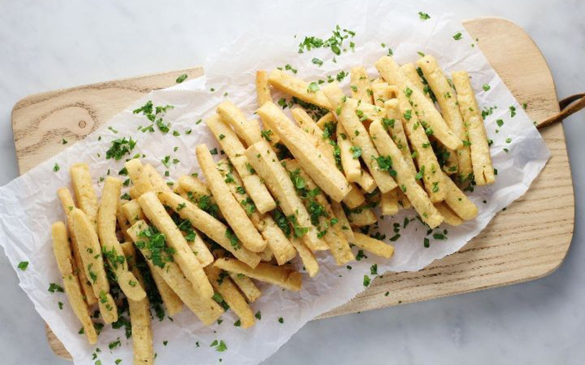

Back
Chickpea Fries
Ingredients
- 4 cups water
- 2 cups chickpea flour
- 1 tablespoon kosher salt
- 1 teaspoon cumin (optional)
- 2 cups canola oil for frying

Instructions
- Place the water in a pot with the salt and bring to a boil. Add the cumin to the chickpea flour. Pour into the water and whisk vigorously until all of the water is absorbed and there are no lumps, about 2-3 minutes. You are looking for the consistency of polenta. Take the pot off the heat. There should be plenty of salt but now is the time to taste and make sure. These fries are all about the salt.
- Line a baking sheet with wax paper. Pour the chickpea mixture onto the baking sheet and spread evenly. Set aside to firm for about 30 minutes.
- After thirty minutes, take a knife and gently cut the mixture into rectangular pieces. Use your judgement as to the size.
- Add the canola oil to a deep pan. Turn the heat to medium high. Once the oil is hot enough (you will get a nice sizzle) add some fries (about 8 at a time) and cook until they are golden brown and crispy on the outside. Take them out and place on a paper towel lined plate. Sprinkle lightly with sumac. Transfer to dish and serve immediately.
Source